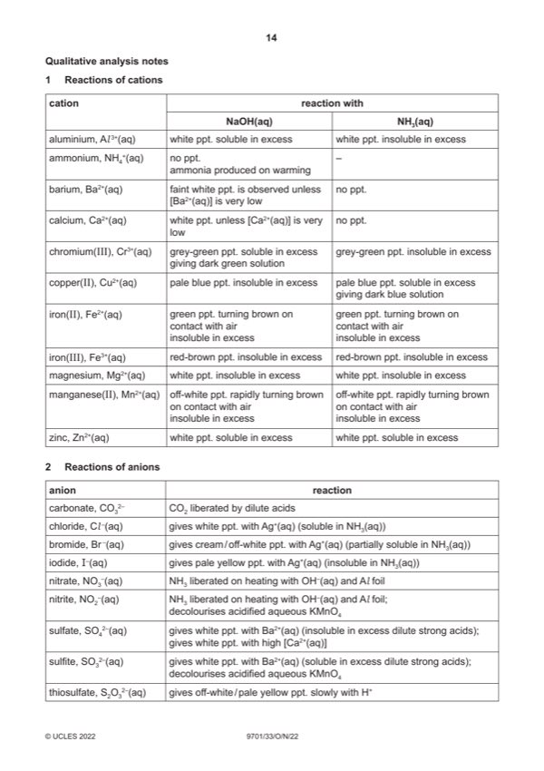

Question 1

Original paper page 14
Part 1(a) — solution
- initial and final balance readings to same precision and to 2 or 3 dp
- correctly calculated mass of FA 1
- two burette readings and titre for rough titration
- initial final burette readings for two (or more) accurate titrations
- initial / start and (burette) reading / volume
- final / end and (burette) reading / volume
- titre or volume / FA 2 and used / added
Mark points
- initial and final balance readings to same precision and to 2 or 3 dp
- correctly calculated mass of FA 1
- two burette readings and titre for rough titration
- initial final burette readings for two (or more) accurate titrations
- initial / start and (burette) reading / volume
- final / end and (burette) reading / volume
- titre or volume / FA 2 and used / added
Part 1(b) — solution
- candidate must take the average of two (or more) titres that are within a total spread of not more than 0.20 cm3
- working / explanation must be shown or ticks must be put next to the two (or more) accurate titres selected
- the mean should be quoted to 2 dp and be rounded to the nearest 0.01 cm3
Mark points
- candidate must take the average of two (or more) titres that are within a total spread of not more than 0.20 cm3
- working / explanation must be shown or ticks must be put next to the two (or more) accurate titres selected
- the mean should be quoted to 2 dp and be rounded to the nearest 0.01 cm3
Part 1(c)(i) — solution
Significant figures 1
all quoted answers in (c)(ii) – (c)(iv) are expressed to 3 or 4 sf.
2022 Page 6 of 11
9701/33 Cambridge International AS & A Level – Mark Scheme October/November 2022
Mark points
- Include the ideas shown in the solution above.
Part 1(c)(ii) — solution
Answer: 1000
- amount of MnO4− = (mol)
Mark points
- amount of MnO4− = (mol)
Part 1(c)(iii) — solution
correctly uses 1
Mark points
- Include the ideas shown in the solution above.
Part 1(c)(iv) — solution
- [M1] correct expression 2
- [M2] correctly uses
Mark points
- [M1] correct expression 2
- [M2] correctly uses
Part 1(d) — solution
Answer: AND
the (apparent) mass of the sample would be higher 1
AND
the percentage would decrease
Mark points
- Correct result: AND
Part 1(e) — solution
Answer: OR · OR
- [M1] all the iron is present as Fe2+ ions / no Fe3+ present 2
- [M2] only Fe2+ / iron ions react with KMnO4
Mark points
- [M1] all the iron is present as Fe2+ ions / no Fe3+ present 2
- [M2] only Fe2+ / iron ions react with KMnO4